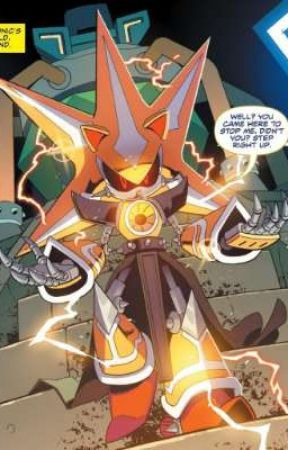
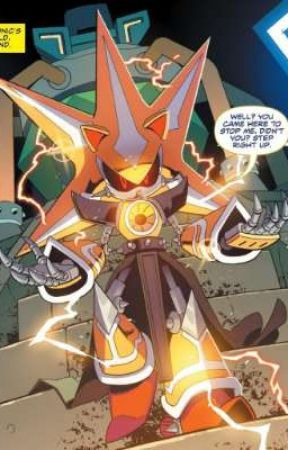
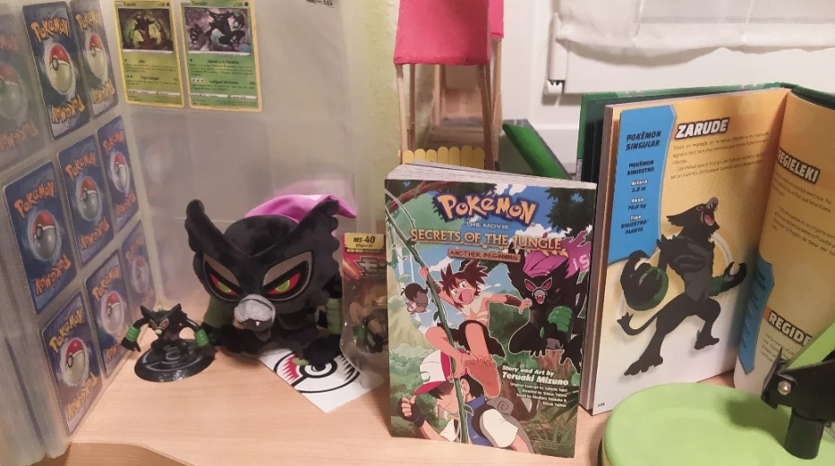
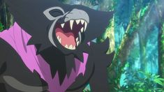
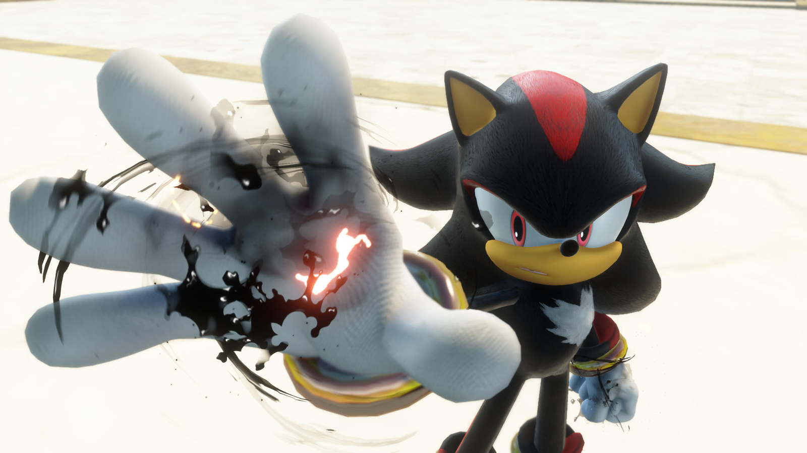

Metal Sonic es un robot construido para ser el doble malvado de Sonic, disenado como su rival definitivo y uno de los villanos mas iconicos de la saga.
Entre sus formas más conocidas están Neo Metal Sonic, Mega Metal Sonic, Metal Madness y Metal Overlord, cada una mas grande y poderosa que la anterior. Metal Overlord se considera una de las encarnaciones mas fuertes, hasta el punto de necesitar a Super Sonic, Super Knuckles y Super Tails juntos para derrotarlo

 Su
primera aparicion fue en Sonic cd
Su
primera aparicion fue en Sonic cd
Bueno esto seria todo por Metal Sonic
Incineroar
Pokemon de Alola
mide aproximadamente 1,8 m de altura, pesa algo mas de 80 kg y se le conoce como el “Pokemon Rudo"

Aqui fue su aparicion en SSBU
Grito del Pokemon
Zarude
Mi Pokemon favorito, y que en mi opinion es el mejor de todos, aparecio en la 23 pelicula Pokemon desempenando el papel de padre en 2020Algunas de mis mas preciadas posesiones

Imagen de Zarude en la serie

Esta cancion es de mis favoritas
Zavok

Zavok es mi villano favorito en los juegos de Sonic The Hedgehog, a partir de 2013 este personaje ha aparecido en todos los juegos
Zavok el Zeti es un personaje capaz de controlar un ejercito de robots, y en su juego base, principal, Lost World, este ha logrado robotizar a un amigo de Sonic y destruir a otros de los amigos del erizo absorviendo la energia de la tierra
Musica de batalla contra Zavok Jefe
Deadly Six/Mortiferos seis
Deadly Six/Mortiferos seis Orquesta
Shadow

Es un erizo negro y rojo creado artificialmente, es sarcastico y le gusta pelear, pero aun asi está dispuesto a trabajar con Team Dark para ayudar a la Resistencia